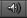

__音频剪辑__包含音频源使用的音频数据。Unity 支持单声道、立体声和多声道音频资源（最多八声道）。Unity 可以导入的音频文件格式包括：.aif、.wav、.mp3 和 .ogg。Unity 还能够导入 .xm、.mod、.it 和 .s3m 格式的音轨模块。音轨模块资源的行为与 Unity 中的任何其他音频资源的行为方式相同，但在资源导入检视面板中无法预览波形。
Force To Mono
启用此选项后，多声道音频将在打包前混合为单声道。
Normalize
启用此选项后，音频将在“Force To Mono”（强制为单声道）混合过程中被标准化。
Load In Background
启用此选项后，剪辑的加载将在单独的线程上延时进行，不会阻止主线程。
Ambisonic
立体混响声 (Ambisonic) 音频源作为一种音频格式，表示可根据听者方向而旋转的声场。它非常适合 360 度视频和 XR 应用程序。如果音频文件包含立体混响声编码的音频，请启用此选项。
| 属性： | 功能： | |
|---|---|---|
| Load Type | Unity 在运行时用于加载音频资源的方法。 | |
| Decompress On Load | 音频文件加载后将立即解压缩。请对小的压缩过的声音使用此选项，以避免动态解压缩产生性能开销。请注意，在加载时解压缩 Vorbis 编码的声音所使用的内存量是保持压缩状态时内存使用量的 10 倍（ADPCM 编码约为 3.5 倍），因此请勿对大文件使用此选项。 | |
| Compressed In Memory | 声音在内存中保持压缩状态，播放时解压缩。此选项具有轻微的性能开销（特别是对于 Ogg/Vorbis 压缩文件），因此仅应当将其用于较大的文件（此情况下，加载时解压缩将使用大量的内存）。解压缩发生在混音器线程中，可在性能分析器窗口的音频面板中的“DSP CPU”部分对其进行监控。 | |
| Streaming | 即时解码声音。此方法使用最少量的内存来缓冲从磁盘中逐渐读取并即时解码的压缩数据。请注意，解压缩发生在单独的串流线程上；可在性能分析器窗口的音频面板中的“Streaming CPU”部分监控其 CPU 使用率。注意：即使没有加载任何音频数据，串流剪辑也有大约 200KB 的过载量。 | |
| Compression Format | 在运行时将用于声音的特定格式。请注意，可用选项取决于当前选定的构建目标。 | |
| PCM | 此选项提供高质量，代价是文件内存变大，适合内存小的声音效果。 | |
| ADPCM | 此格式适用于大量噪音和需要大量播放的声音（例如脚步声、撞击声、武器声音）。较之于 PCM，压缩能力提高 3.5 倍，但 CPU 使用率远低于 MP3/Vorbis 格式，因此成为上述声音类别的最佳压缩方案。 | |
| Vorbis/MP3 | 压缩使文件减小，但与 PCM 音频相比，质量降低。可通过 Quality 滑动条来配置压缩量。此格式最适合中等长度的音效和音乐。 | |
| Sample Rate Setting | PCM 和 ADPCM 压缩格式允许自动优化或手动降低采样率。 | |
| Preserve Sample Rate | 此设置可保持采样率不变（默认值）。 | |
| Optimize Sample Rate | 此设置根据分析的最高频率内容自动优化采样率。 | |
| Override Sample Rate | 此设置允许手动覆盖采样率，因此可有效地将其用于丢弃频率内容。 | |
| Force To Mono | 如果启用此选项，音频剪辑将在下方混为单声道声音。在混合之后，信号的峰值归一化，因为混合过程通常会产生比原始信号更安静的信号，所以峰值归一化信号通过音频源的音量属性调节为后面的调整提供了更好的空间。 | |
| Load In Background | 如果启用此选项，音频剪辑将在后台加载，不会导致主线程停顿。默认情况下，此选项为关闭状态以确保 Unity 为标准形式，即：在场景开始播放时所有音频剪辑已完成加载。请注意，针对仍在后台加载的音频剪辑的播放请求将被延迟，直到剪辑完成加载。可通过 AudioClip.loadState 属性来查询加载状态。 | |
| Preload Audio Data | 如果启用此选项，则在加载场景时提前加载音频剪辑文件。默认情况下，此选项为开启状态以反映 Unity 标准模式，即：在场景开始播放时所有音频剪辑文件已完成加载。如果未设置此标志，音频数据将加载到第一个 AudioSource.Play()/AudioSource.PlayOneShot()，或者可通过 AudioSource.LoadAudioData() 加载并通过 AudioSource.UnloadAudioData() 卸载。 | |
| Quality | 确定要应用于__压缩__剪辑的压缩量。不适用于 PCM/ADPCM/HEVAG 格式。可在检视面板中查看有关文件大小的统计信息。要调整此值，建议将滑动条拖动到某个位置让播放质量“足够好”，同时又保持文件足够小以满足发布条件。请注意，原始大小与原始文件有关，因此如果这是一个 MP3 文件并且压缩格式设置为 PCM（即未压缩），则生成的比率将大于 100％，因为该文件是未压缩存储，并占用超过了 MP3 格式文件的原始空间。 | |
预览窗口包含三个图标。
 当自动播放开启时，在用户选择剪辑后，剪辑文件将立即播放。
当循环播放开启时，剪辑将以连续循环方式播放。
用于播放剪辑。
Unity 能够读取各种源文件格式。在导入文件之后，文件将立即将被转码为适合构建目标和声音类型的格式。可通过检视面板中的 Compression Format 设置选择此格式。
通常，要保持声音尽可能接近原始声音，PCM 和 Vorbis/MP3 格式是首选。PCM 对于 CPU 要求非常较低，因为声音是未压缩的，直接从内存中读取即可。Vorbis/MP3 允许通过“Quality”滑动条自动适应来丢弃少量听觉信息。
ADPCM 是内存和 CPU 使用率之间的折衷方案，因为它仅使用比未压缩 PCM 选项略多的 CPU，但产生恒定的 3.5 压缩比，与使用 Vorbis 或 MP3 可实现的压缩相比，压缩能力通常是其 1/3。此外，ADPCM（如 PCM）允许自动优化或手动设置要使用的采样率，在声音的频率内容可接受的质量损失范围内，可进一步压缩打包声音资源的大小。
模块文件（.mod、.it、s3m 和 .xm）可以提供极高的质量，但体积却极小。使用模块文件时，除非有特别需求，否则请确保将 Load Type 设置为 Compressed In Memory_，因为如果将其设置为 Decompress On Load_，那么整首歌曲都将被解压缩。这是 Unity 5.0 中的一种新行为，允许对这些类型的剪辑使用 GetData/SetData，但音轨模块的一般和默认用例是将它们压缩在内存中。
作为一般经验法则，_压缩_音频（或模块）最适合内容长的文件（如背景音乐或对话），而 PCM 和 ADPCM 更适合包含一些噪音的短音效，因为 ADPCM 的瑕疵在平滑信号上太明显。您应该使用压缩滑动条来调整压缩量。从高压缩开始，逐渐将设置降低至可感知到音质损失的程度。然后，再稍微增加，直到感知到的质量损失消失。
Unity 支持导入各种源格式的声音文件。但是，在导入这些文件时（音轨文件除外），它们始终会重新编码为构建目标格式。默认情况下，此格式为 Vorbis，但如果需要，可以根据平台改用其他格式（ADPCM、MP3 等）。
2017–08–09 页面已发布
Unity 2017.1 中新增了立体混响声支持复选框NewIn20171